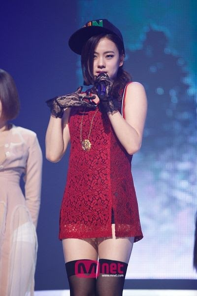
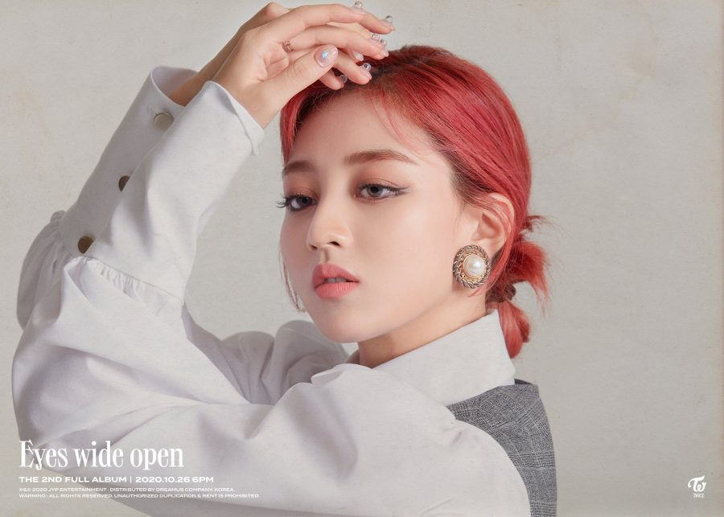
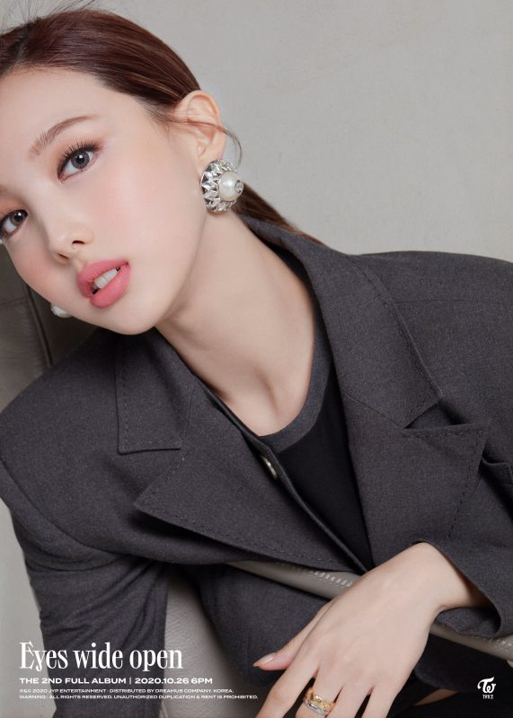
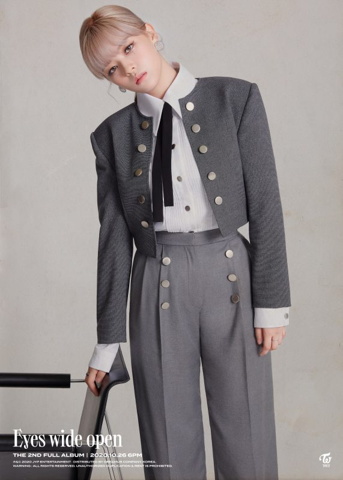
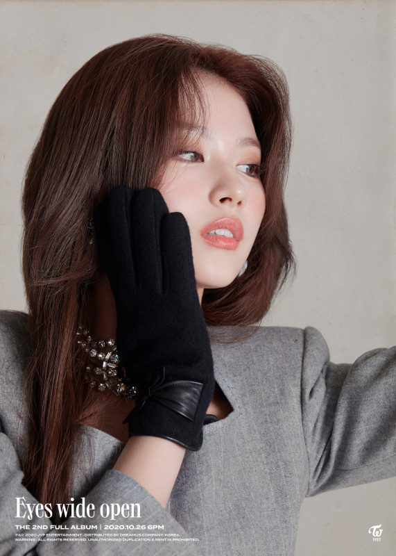
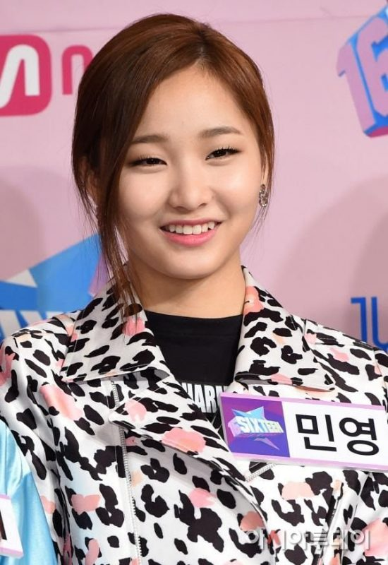
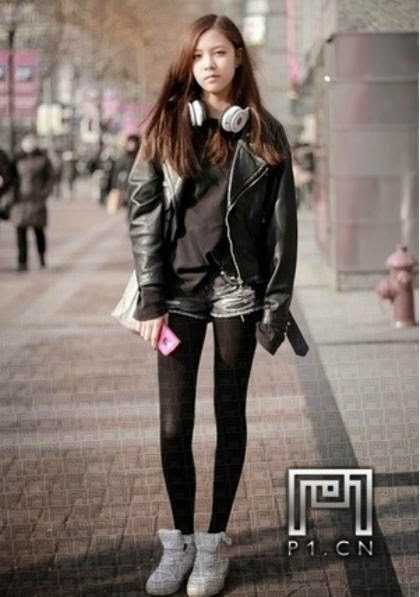

Que es 6mix?
6mix ( estilizado como 6MIX ) es un grupo de chicas del sur de Corea formado por JYP Entertainment.
Aunque el grupo debía debutar en 2015, el grupo fue cancelado y resultó en la creación de Dieciséis.
El grupo estaba compuesto originalmente por seis miembros, Nayeon, Jeongyeon, Jihyo, Minyoung, Lena y
Cecilia. Pero poco después de ser anunciada, Lena dejó JYPE para convertirse en actriz en los Estados
Unidos, y Cecilia dejó el grupo para concentrarse en actuar en China, bajo el nombre de Yanfei Song.
Más tarde, Sana se agregó a la alineación para ayudar a compensar la pérdida de los dos miembros, solo
para que el debut del grupo se cancelara más tarde. Con la transmisión de SIXTEEN, vimos a los miembros
restantes de 6MIX participar en el programa como concursantes, con Nayeon, Jeongyeon, Sana, y Jihyo para
convertirse en futuros miembros de Dos veces, y Minyoung para ser eliminada, con su paradero actual
desconocido.
Miembros de la agrupacion
1-Lena:
|  |
Nombre artístico: Lena (레나)
Nombre de nacimiento: Ahn Celena (안셀레나)
Nacionalidad: coreana
Cumpleaños: 1992
Signo del zodiaco: N/A
Altura: N/A
Peso: N/A
Tipo de sangre: N/A
Datos de Lena :
-Ella es de Los Ángeles, California.
-Apareció en"Full Moon" de Sunmi.
-Ella todavía es cercana a todos los miembros de TWICE.
-Rumores que dicen que ella habría sido la rapera principal del grupo.
-Lena dejó JYP Entertainment antes de SIXTEEN.
|
2-Jisoo
|  |
Nombre artístico: Jisoo (지수) pero se la conoce como Jihyo (지효)
Nombre de nacimiento: Park Ji Soo (박지수) pero legalizó su nombre a Park Ji Hyo (박지효)
Nacionalidad: coreana
Cumpleaños: 1 de febrero de 1997
Zodíaco Letrero: Oficial de Acuario
Altura: 162 cm (5 pies 3¾ pulgadas) / Aprox. Altura Real: 160 cm (5'3″)
Peso Oficial: 56 kg (123 lbs) / Aprox. Peso real: 49 kg (108 lbs)
Tipo de sangre: O
Datos de Jihyo:
-Nació en Guri, Gyeonggi-do, Corea del Sur.
-El verdadero nombre de Jihyo es Park Jisoo . Legalizó su nombre a Park Jihyo justo antes de Sixteen.
-Jihyo tiene 2 hermanas menores, Seoyeon y Jiyoung.
-Se convirtió en aprendiz de JYP cuando estaba en tercer grado después de ganar el segundo lugar en un concurso en Junior Naver para un papel infantil.
Ella es la integrante de Twice que más entrenó. Entrenó durante 10 años.
|
3-Nayeon
|  |
Nombre de la etapa: Nayeon ( "mace ΔTAG1>
Nombre de nacimiento: Lim Na Yeon ( ງ 解 )
Nacionalidad: coreano
Cumpleaños: 22 de septiembre de 1995
Signo del zodiaco: Virgo
Altura oficial: 163 cm ( 5’4 ″ ) /Aprox. Altura real: 164 cm ( 5’4 ″ )
Peso: 47 kg ( 104 lbs )
Tipo de sangre: A
Datos de Nayeon:
-Nayeon tiene una hermana menor llamada Im Seo-Yeon.
-Cuando era niña, Nayeon participó en un concurso de modelos infantiles y fue elegida por JYP. En ese momento, su madre se negó, pero 10 años después, en 2010, ingresó en secreto a una audición abierta de JYP y pasó.
-Nayeon fue elegida para el grupo de chicas 6mix de JYP, pero se disolvieron y nunca debutaron.
-Fue el primer miembro de Sixteen en ser anunciado y también el primer miembro en ser confirmado en Twice.
|
4-Jeongyeon
|  |
Nombre de la etapa: Jeongyeon Imperme (
Nombre de nacimiento: Yoo Kyung Wan ( ☺ ☺ ), pero legalizó su nombre a Yoo Jeong Yeon ( ງ ⁇ )
Nacionalidad: coreano
Cumpleaños: 1 de noviembre de 1996
Signo del zodiaco: Escorpio
Altura oficial: 169 cm ( 5’7 ″ ) / Altura real: 167 cm ( 5’6 ″ )
Peso: 49,1 kg ( 108 lbs )
Tipo de sangre: O
Datos de Jeongyeon:
– Ella nació en Suwon, Corea del Sur.
– El nombre de nacimiento de Jeongyeon es Yoo Kyung Wan. Ella cambió su nombre en tercer grado porque fue burlada porque su nombre sonaba como el de un niño.
– Ella tiene 2 hermanas mayores: Gong Seungyeon ( actriz ) y trabajador de oficina de Seo Yeon ( ).
– Cuando Jeongyeon era joven, falló la audición de JYP. Se convirtió en aprendiz después de pasar la sexta audición abierta de JYP Entertainment el 1 de marzo de 2010.
|
5-Sana
|  |
Nombre de la etapa: Sana ( 사 mache )
Nombre de nacimiento: Minatozaki Sana ( ງ ງ 하 )
Nacionalidad: japonés
Cumpleaños: 29 de diciembre de 1996
Signo del zodiaco: Capricornio
Altura oficial: 168 cm ( 5’6 ″ ) / Aprox. Altura real: 163 cm ( 5’4 ″ )
Peso: 47 kg ( 104 lbs )
Tipo de sangre: B
Datos de Sana:
– Ella nació en Tennōji-ku, Osaka, Japón.
– Sana es hija única.
– Sana fue elegida mientras estaba de compras con sus amigos.
– Ella pasó la audición el 13 de abril de 2012.
|
6-Minyoung
|  |
Nombre de la etapa: Minyoung ( 解 )
Nombre de nacimiento: Song Minyoung ( ວ ● )
Nacionalidad: coreano
Cumpleaños: 27 de febrero de 1998
Signo del zodiaco: Piscis
Altura: N / A
Peso: N / A
Tipo de sangre: A
Datos de Minyoung:
– Ella fue una de las concursantes en SIXTEEN.
– Fue una de las aprendices más largas en JYP.
– Nombre en inglés: Charlene Song
– Ella es conocida por su poderosa voz y como compositora.
– Lema: “ No pierda el tiempo y viva positivamente ”.
– Ella dejó JYP Entertainment después SIXTEEN.
– Después SIXTEEN, la gente especuló que regresó a Estados Unidos para concentrarse en sus estudios.
|
7-Ex miembro: Cecilia
|  |
Nombre de la etapa: Cecilia
Nombre de nacimiento: Song Yanfei ( 宋 )
Nombre inglés: Cecilia Boey
Nacionalidad: Australiano-chino
Cumpleaños: 22 de octubre de 1995
Signo del zodiaco: Libra
Altura: 5'6″
Peso: 101 lb ( 46 kg )
Tipo de sangre: O
Datos de Cecilia:
– Ella era popular entre los aprendices de JYP.
– Ella apareció en el video musical debut de Got7 ’ ” Girls Girls Girls ”.
– Ella dejó JYP en 2014 por una razón desconocida.
– Ahora es una actriz china. |
|